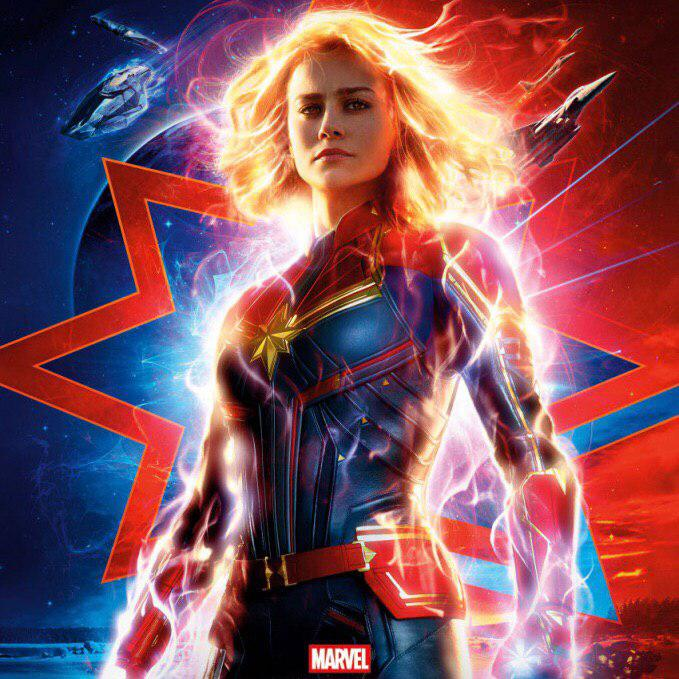

 Керол Денверс (англ. Carol Danvers) — вигадана супергероїня американських коміксів видавництва Marvel. Створена автором Роєм Томасом і намальована художником Джином Коланом, майор Керол Денверс вперше з'явилася як військовий Повітряних сил США у Marvel Super-Heroes № 13 (березень 1968) і дебютувала як перше втілення Міс Марвел у Ms. Marvel № 1 (січень 1977) після того, як з'єднання генів людини та чужорідних кріі дало їй надлюдські сили. Дебютував під час Срібного віку коміксів, персонаж з'явився в однойменній серії наприкінці 1970-х, перш ніж стати асоційованим з командами супергероїв Месники та Люди Ікс. Цей персонаж також відомий як Подвійна зірка (англ. Binary), Птаха війни (англ. Warbird) і Капітан Марвел (англ. Captain Marvel) в різні моменти її історії, і був представлений в інших ліцензованих продуктах Marvel, включаючи відеоігри, мультсеріали та такі товари, як колекційни картки. Керол Денверс була названа «найбільшим жіночим героєм Marvel», «феміністичною іконою», і, «можливо, най-могутнішим Месником Marvel». Вона зайняла двадцять дев'яте місце в рейтингу Comics Buyer's Guide «100 найсексуальніших жінок у коміксах», а також одинадцяте місце у списку IGN «Топ-50 Месників». Marvel Studios анонсувала фільм про героїню під назвою «Ка-пітан Марвел» з Брі Ларсон у головній ролі, який має вийти 8 березня 2019. Ларсон також з'явиться у ролі Денверс у «Месниках 4».
Керол Денверс спочатку мала надлюдську силу, витривалість, здатність літати, фізичну довговічність, обмежене «сьоме відчуття» передбачення та ідеально об'єднану фізіологію людини/крі, що зробила її стійкою до більшості токсинів та отрут. Як Подвійна зірка, персонаж міг використовувати енергію «білої діри», дозволяючи повністю контролювати і маніпулювати зоряною енергією, а отже контролювати тепло, електромагнітний спектр і гравітацію. Подорожі на швидкості світла та здатність виживати у вакуумі космосу також були можливими. Хоча зв'язок з білою дірою врешті-решт припинився, Денверс зберігає свої сили Подвійної зірки в меншій мірі, що дозволяє їй як поглинати енергію, так і проектувати її у фотонній формі. Вона все ще може вижити в космічному просторі. Хоча їй бракує постійного джерела енергії для підтримки здібностей на своєму попередньому космічному рівні, вона може тимчасово прийняти форму Подвійної зірки, якщо отримає досить високе надходження енергії. Денверс володіє надлюдською силою і довговічністю, здатна літати приблизно в шість разів швидше звуку, має шосте відчуття і може випускати вибухові хвилі променистої енергії з кінчиків своїх пальців. Вона також демонструє здатність поглинати інші форми енергії, такі як електричний струм, для подальшого збільшення її сил та енергії, аж до дії вибухонебезпечної ядерної зброї. При достатньому посиленні, вона може витримати тиск з вагою у 92 тонни і нанести удар з однаковим рівнем сили, хоча Генк Пім припустив, що це, ймовірно, не є її межею. Денверс не може поглинути магічну енергію без наслідків, однак вона допомогла доктору Стівену Стренджу перемогти містичного загрозливого сера Воррена Травелера. Керол Денверс також є винятковим шпигунським агентом, льотчиком, рукопашним бійцем і майстром.